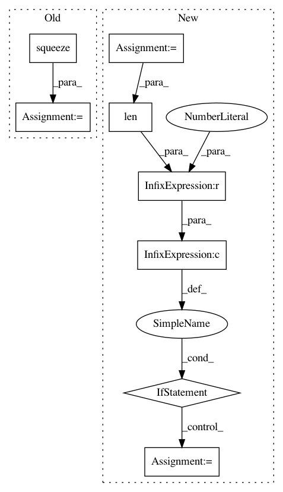

ed7782f0f59f1eef6453f47633fe9e15bda00f84,deepchem/models/tensorflow_models/__init__.py,TensorflowGraphModel,fit,#TensorflowGraphModel#Any#Any#Any#Any#Any#,298
Before Change
output = fetched_values[:len(self.train_graph.output)]
loss = fetched_values[-1]
avg_loss += loss
y_pred = np.squeeze(np.array(output))
y_b = y_b.flatten()
n_batches += 1
if epoch % checkpoint_interval == checkpoint_interval - 1:
saver.save(sess, self._save_path, global_step=epoch)
After Change
epoch_end_indices.append(index)
sess.run(self.train_graph.graph.queue.close())
epoch_end_indices = []
enqueue_thread = threading.Thread(target=enqueue, args=[sess, dataset, nb_epoch, epoch_end_indices])
enqueue_thread.daemon = True
enqueue_thread.start()
// Main training loop.
try:
epoch = 0
index = 0
index_in_epoch = 0
avg_loss = 0.0
while True:
if index_in_epoch % log_every_N_batches == 0:
log("On batch %d" % index_in_epoch, self.verbose)
// Run training op.
fetches = self.train_graph.output + [
train_op, self.train_graph.loss
]
fetched_values = sess.run(fetches)
loss = fetched_values[-1]
avg_loss += loss
index += 1
index_in_epoch += 1
if len(epoch_end_indices) > 0 and index >= epoch_end_indices[0]:
// We have reached the end of an epoch.
if epoch % checkpoint_interval == checkpoint_interval - 1:
saver.save(sess, self._save_path, global_step=epoch)
avg_loss = float(avg_loss) / index_in_epoch
log("Ending epoch %d: Average loss %g" % (epoch, avg_loss),
self.verbose)
index_in_epoch = 0
avg_loss = 0.0
del epoch_end_indices[0]
except tf.errors.OutOfRangeError:
// We have reached the end of the data.
pass
// Always save a final checkpoint when complete.
In pattern: SUPERPATTERN
Frequency: 4
Non-data size: 8
Instances
Project Name: deepchem/deepchem
Commit Name: ed7782f0f59f1eef6453f47633fe9e15bda00f84
Time: 2017-03-23
Author: peter.eastman@gmail.com
File Name: deepchem/models/tensorflow_models/__init__.py
Class Name: TensorflowGraphModel
Method Name: fit
Project Name: rusty1s/pytorch_geometric
Commit Name: 675b7884c09875486fdddffa2d8a6a12247ab4d7
Time: 2020-05-31
Author: matthias.fey@tu-dortmund.de
File Name: torch_geometric/utils/convert.py
Class Name:
Method Name: to_networkx
Project Name: galeone/dynamic-training-bench
Commit Name: 8bf7c385c00990bf1d0de1b480336d8c1c9d74e8
Time: 2017-02-01
Author: nessuno@nerdz.eu
File Name: train.py
Class Name:
Method Name: classifier
Project Name: rusty1s/pytorch_geometric
Commit Name: a998e7a1fa996edb4bcc1b34a0df5967ed6ec9e2
Time: 2020-05-13
Author: matthias.fey@tu-dortmund.de
File Name: torch_geometric/utils/convert.py
Class Name:
Method Name: to_networkx